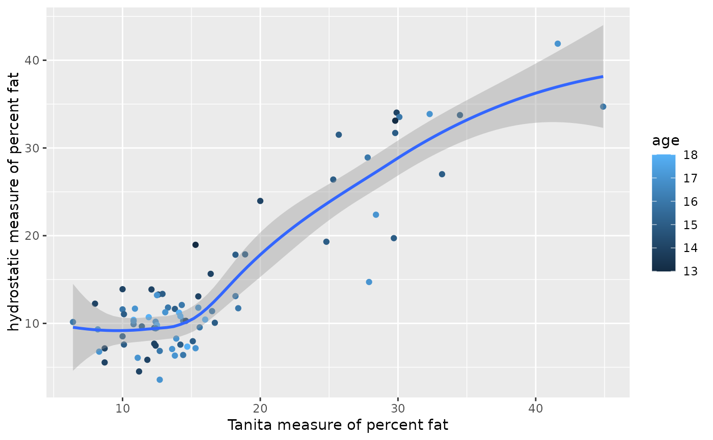

The body fat percentage of 78 high school wrestlers was measured using three separate techniques, and the results are stored in the data frame HSWRESTLER. The techniques used were hydrostatic weighing (hwfat), skin fold measurements (skfat), and the Tanita body fat scale (tanfat).
HSWRESTLER
A data frame with 78 observations on the following 9 variables:
age (age of wrestler in years)
ht (height of wrestler in inches)
wt (weight of wrestler in pounds)
abs (abdominal fat)
triceps (tricep fat)
subscap (subscapular fat)
hwfat (hydrostatic measure of percent fat)
tanfat (Tanita measure of percent fat)
skfat (skin fold measure of percent fat)
Data provided by Dr. Alan Utter, Department of Health Leisure and Exercise Science, Appalachian State University
Ugarte, M. D., Militino, A. F., and Arnholt, A. T. 2015. Probability and Statistics with R, Second Edition. Chapman & Hall / CRC.
FAT <- c(HSWRESTLER$hwfat, HSWRESTLER$tanfat, HSWRESTLER$skfat) GROUP <- factor(rep(c("hwfat", "tanfat", "skfat"), rep(78, 3))) BLOCK <- factor(rep(1:78, 3)) friedman.test(FAT ~ GROUP | BLOCK)#> #> Friedman rank sum test #> #> data: FAT and GROUP and BLOCK #> Friedman chi-squared = 22.487, df = 2, p-value = 1.309e-05 #>rm(FAT, BLOCK, GROUP) ggplot(data = HSWRESTLER, aes(x = tanfat, y = hwfat, color = age)) + geom_point() + geom_smooth() + labs(x = "Tanita measure of percent fat", y = "hydrostatic measure of percent fat")#>